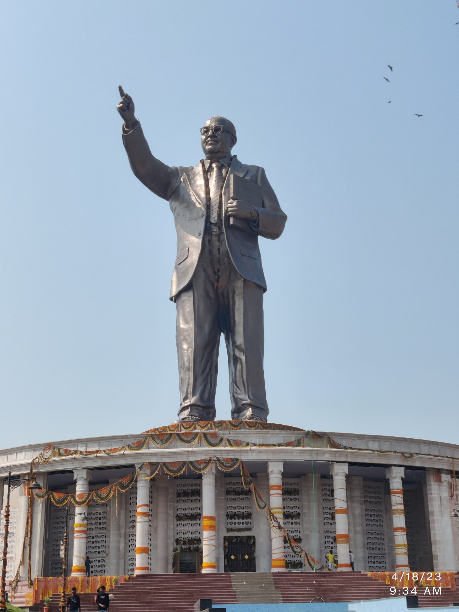

History of the Statue
The statue of Dr. B.R. Ambedkar in Thiruverkadu is a powerful symbol of social justice, honoring the architect of the Indian Constitution and a tireless advocate for the rights of marginalized communities.
It commemorates his legacy, values of equality, and serves as a gathering place for events and reflection. The artistic design reflects his dignity and stands as an inspiration to all.